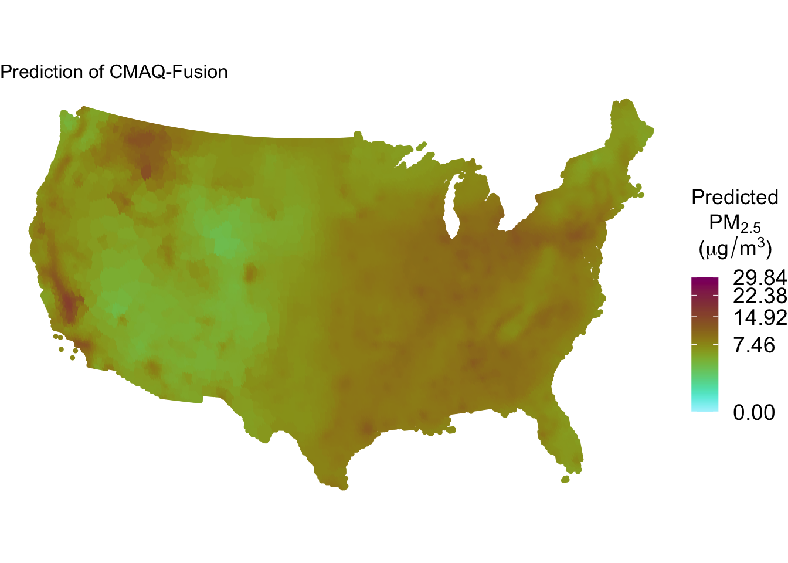
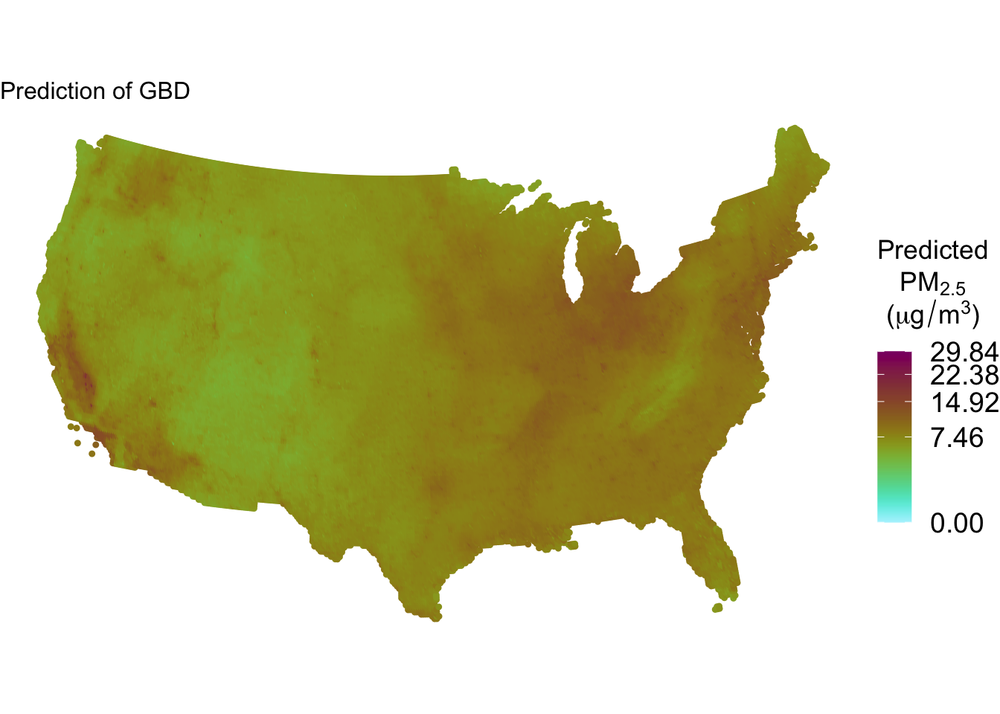
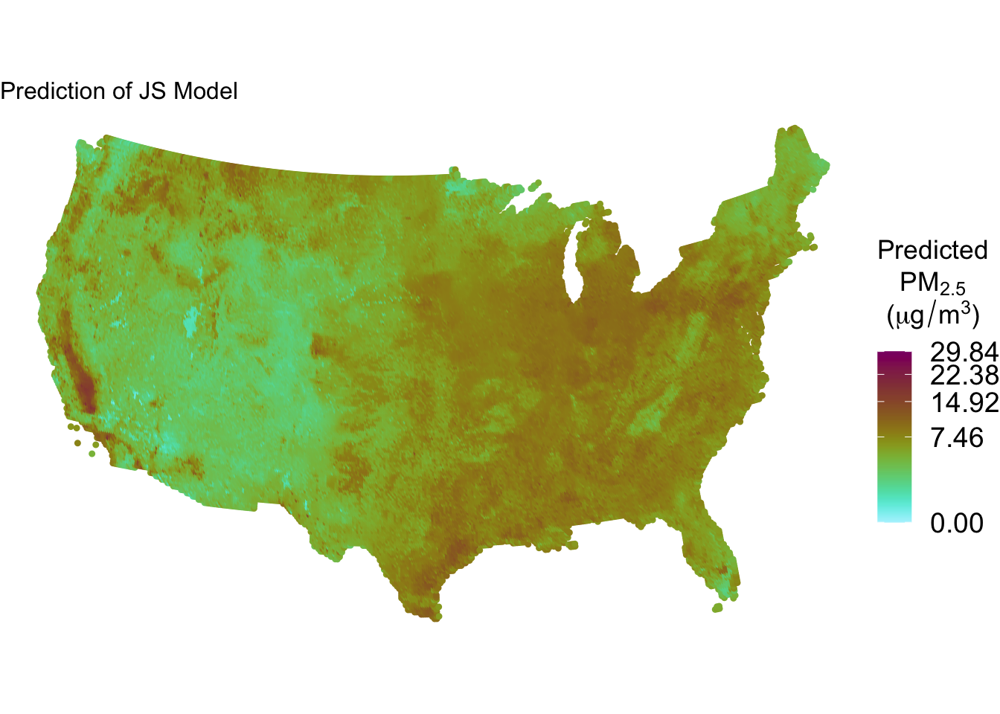
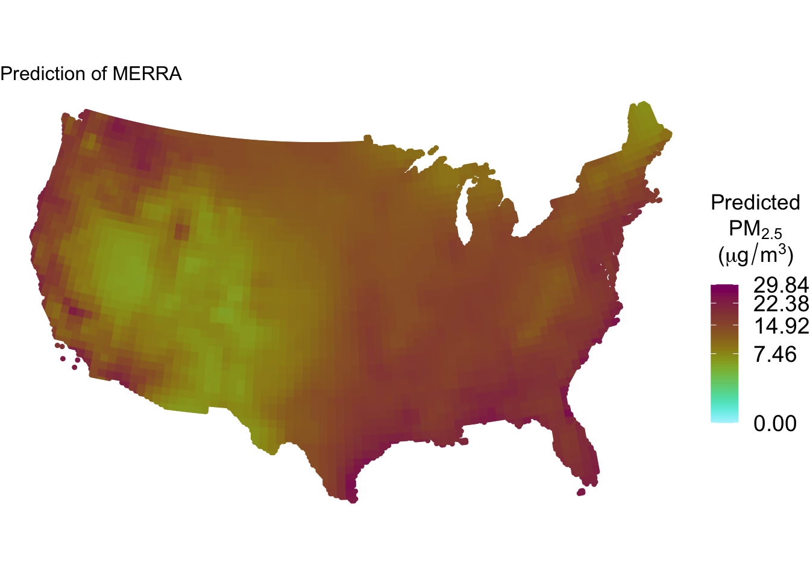
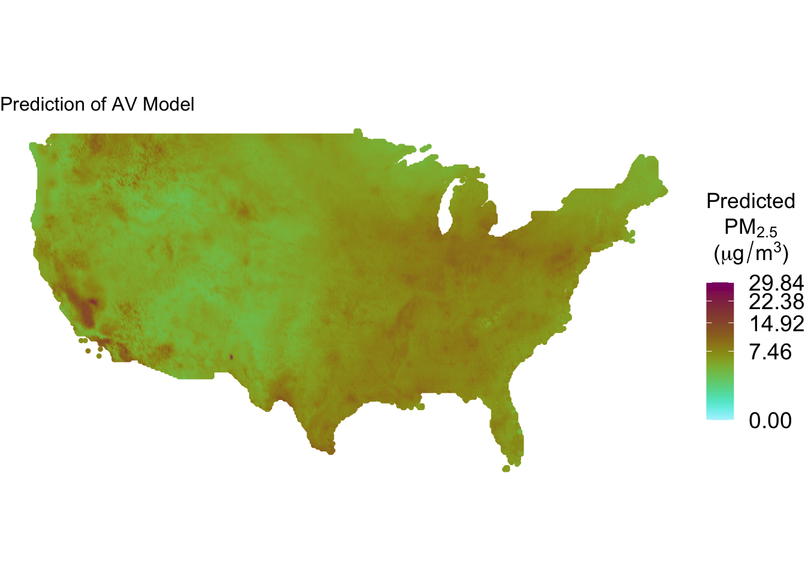
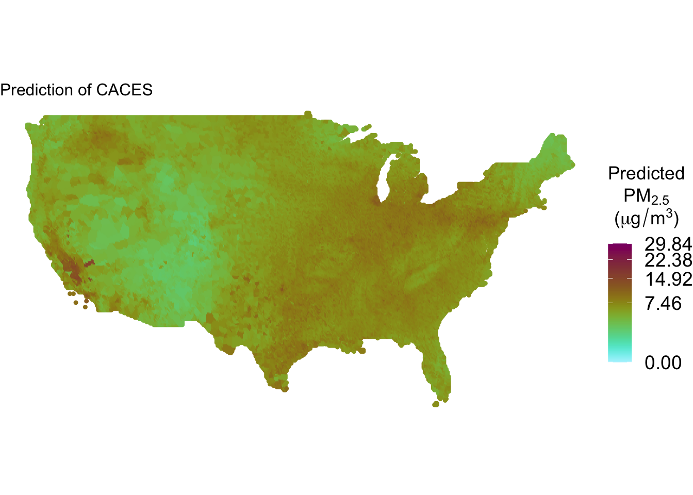
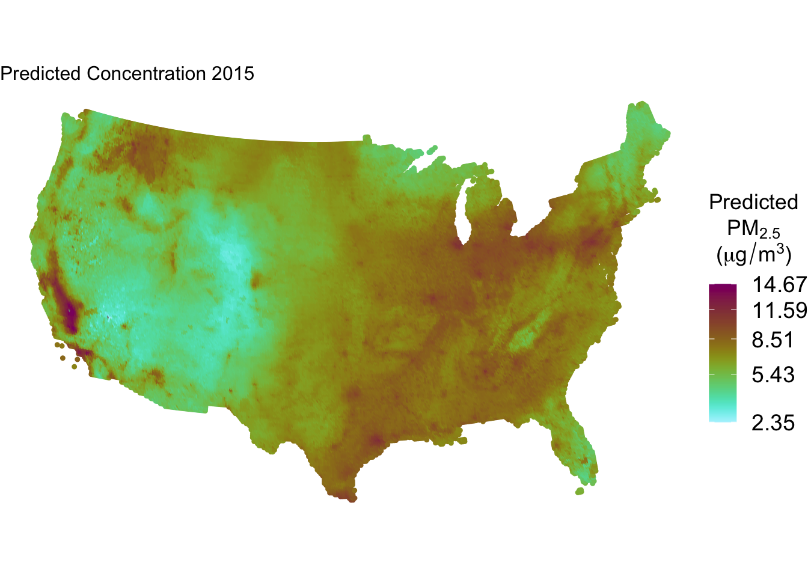
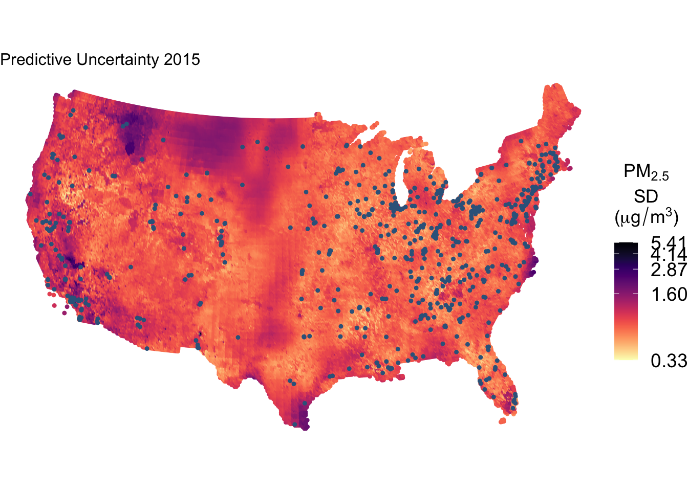
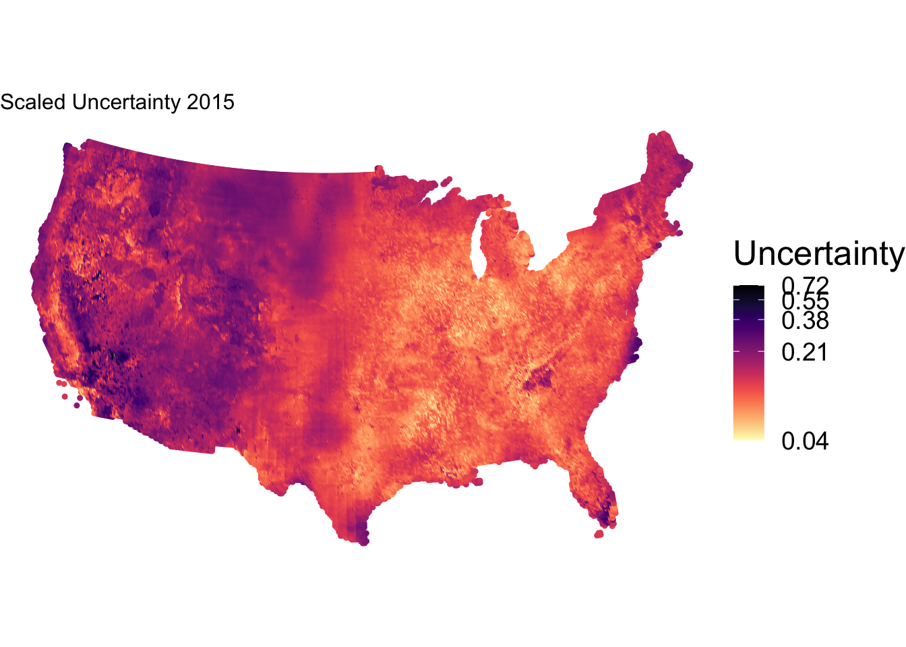

source(here("labs", "bayesian_nonparametric_ensemble", "functions", "STR_1_plotOneParameterSpatial.R"))Bayesian Nonparametric Ensemble
SHARP Bayesian Modeling for Environmental Health Workshop
Goal of this computing lab session
This goal of this lab is to take some concepts from the Introduction to Bayesian Nonparametric Ensemble (BNE) lecture and introduce you to the way BNE works.
What’s going to happen in this lab session?
During this lab session, we will:
- Explore several pollution concentration prediction models;
- Understand how pollution concentration models can disagree;
- Understand what
BNEdoes; - Explore output of
BNE; and - Understand why
BNEis useful for estimating uncertainty of exposures.
Introduction
As seen in the lecture just now, BNE is XX [[[Summary of BNE]]]
BNE code is currently written in MATLAB programming language (folder bne_v2_matlab) and translated to Octave open source programming language (folder bne_v2_octave) for this course. In this lab, we fit an ensemble model integrating multiple existing prediction models and estimate uncertainty in PM\(_{2.5}\) predictions. Predictions refers to the predicted value at some location and time. Note that for BNE, prediction does not refer to future values, but values within our study period + location.
We estimate 2015 annual PM\(_{2.5}\) concentrations at 0.125°× 0.125° resolution across the contiguous US by combining seven well-validated prediction models with BNE. We trained the model on measurements reported in the US Environmental Protection Agency’s Air Quality System (AQS) database. We estimated model uncertainty as the standard deviations of predictions’ location-specific posterior predictive distribution.
Exploring input model data
We will start exploring annual average PM\(_{2.5}\) concentrations from input base models, which are the individual prediction models that are incorporated into BNE to ultimate generate predictions. These models along with AQS monitor data will be used to train BNE.

Load plotting function plotOneParameterSpatial, which will be used for plotting maps.
Load training dataset containing input base models and AQS observations for PM\(_{2.5}\) during the period 2010-2015. To create the training dataset, we spatially joined each model to the EPA AQS dataset, using the prediction that was closest to each monitor (i.e., nearest neighbors).
aqs_preds <- readr::read_csv(here("data", "us", "training_cvfolds.csv"))Rows: 3808 Columns: 14
── Column specification ────────────────────────────────────────────────────────
Delimiter: ","
chr (2): state, ref_id
dbl (12): lat, lon, yyyy, obs, pred_av, pred_cc, pred_cm, pred_gs, pred_js, ...
ℹ Use `spec()` to retrieve the full column specification for this data.
ℹ Specify the column types or set `show_col_types = FALSE` to quiet this message.summary(aqs_preds) lat lon yyyy obs
Min. :25.47 Min. :-124.20 Min. :2010 Min. : 0.000285
1st Qu.:35.25 1st Qu.: -96.93 1st Qu.:2011 1st Qu.: 7.810454
Median :39.47 Median : -86.21 Median :2012 Median : 9.095420
Mean :38.54 Mean : -90.72 Mean :2012 Mean : 9.074536
3rd Qu.:41.60 3rd Qu.: -80.34 3rd Qu.:2014 3rd Qu.:10.356421
Max. :48.39 Max. : -70.75 Max. :2015 Max. :22.301695
pred_av pred_cc pred_cm pred_gs
Min. : 3.433 Min. : 2.809 Min. : 2.642 Min. : 3.269
1st Qu.: 7.733 1st Qu.: 7.831 1st Qu.: 8.379 1st Qu.: 8.294
Median : 9.033 Median : 9.157 Median : 9.715 Median : 9.486
Mean : 8.991 Mean : 9.071 Mean : 9.515 Mean : 9.382
3rd Qu.:10.225 3rd Qu.:10.351 3rd Qu.:10.768 3rd Qu.:10.516
Max. :18.108 Max. :18.628 Max. :16.388 Max. :18.666
pred_js pred_me pred_rk state
Min. : 0.6172 Min. : 4.719 Min. : 2.323 Length:3808
1st Qu.: 8.0356 1st Qu.:13.206 1st Qu.: 8.857 Class :character
Median : 9.3535 Median :15.459 Median :10.815 Mode :character
Mean : 9.2929 Mean :15.023 Mean :10.737
3rd Qu.:10.5713 3rd Qu.:17.377 3rd Qu.:12.691
Max. :22.7427 Max. :23.831 Max. :23.959
ref_id fold
Length:3808 Min. : 1.000
Class :character 1st Qu.: 3.000
Mode :character Median : 5.000
Mean : 5.497
3rd Qu.: 8.000
Max. :10.000 Load prediction dataset. To create the prediction dataset, we first created a reference grid, and then joined each prediction dataset by nearest neighbor. This dataset also contains BNE results that will be explored in next steps.
bne2015 <- readr::read_csv(here("data", "us", "refGrid_pm25_comp_seb_vers_2_2015_2_0-5_2_0-5_2_0-0498_0-1353.csv"))Rows: 52385 Columns: 51
── Column specification ────────────────────────────────────────────────────────
Delimiter: ","
dbl (51): lat, lon, time, ens_mean, ens_sd, rp_mean, rp_sd, y_mean, y_sd, un...
ℹ Use `spec()` to retrieve the full column specification for this data.
ℹ Specify the column types or set `show_col_types = FALSE` to quiet this message.Explore input base models. What does the input base model predictions look like for the year 2015 over the US?
# generate value range and value breaks for the plot
varVec <- c(
0, bne2015$pred_av, bne2015$pred_cc, bne2015$pred_cm,
bne2015$pred_gs, bne2015$pred_js, bne2015$pred_me,
bne2015$pred_rk
)
varRange <- max(varVec) - min(varVec)
varScale <- c(
round(min(varVec), 2), round(min(varVec) + 0.25 * varRange, 2),
round(min(varVec) + 0.5 * varRange, 2), round(min(varVec) + 0.75 * varRange, 2),
round(max(varVec), 2)
)
# Assign coordinate reference system as needed on the plotting function
projCRS <- "epsg:9311"
# use function plotOneParameterSpatial
plotOneParameterSpatial(
dta = bne2015, parameterName = "pred_av",
mainTitle = "Prediction of AV Model", valueScale = varScale
)
plotOneParameterSpatial(
dta = bne2015, parameterName = "pred_cc",
mainTitle = "Prediction of CACES", valueScale = varScale
)
plotOneParameterSpatial(
dta = bne2015, parameterName = "pred_cm",
mainTitle = "Prediction of CMAQ-Fusion", valueScale = varScale
)
plotOneParameterSpatial(
dta = bne2015, parameterName = "pred_gs",
mainTitle = "Prediction of GBD", valueScale = varScale
)
plotOneParameterSpatial(
dta = bne2015, parameterName = "pred_js",
mainTitle = "Prediction of JS Model", valueScale = varScale
)
plotOneParameterSpatial(
dta = bne2015, parameterName = "pred_me",
mainTitle = "Prediction of MERRA", valueScale = varScale
)
plotOneParameterSpatial(
dta = bne2015, parameterName = "pred_rk",
mainTitle = "Prediction of RK Model", valueScale = varScale
)
How do input base model predictions compare with AQS observations?
aqs_preds_summ <- aqs_preds %>%
mutate(
se_av = (pred_av - obs)^2,
se_cc = (pred_cc - obs)^2,
se_cm = (pred_cm - obs)^2,
se_gs = (pred_gs - obs)^2,
se_js = (pred_js - obs)^2,
se_me = (pred_me - obs)^2,
se_rk = (pred_rk - obs)^2
)
aqs_preds_summ_reg <- aqs_preds_summ %>%
inner_join(readr::read_csv(here("data", "us", "key_state_region.csv")), by = "state") %>%
inner_join(readr::read_csv(here("data", "us", "key_region_regionName.csv")), by = "region")Rows: 52 Columns: 2
── Column specification ────────────────────────────────────────────────────────
Delimiter: ","
chr (2): region, state
ℹ Use `spec()` to retrieve the full column specification for this data.
ℹ Specify the column types or set `show_col_types = FALSE` to quiet this message.
Rows: 10 Columns: 2
── Column specification ────────────────────────────────────────────────────────
Delimiter: ","
chr (2): region, region_name
ℹ Use `spec()` to retrieve the full column specification for this data.
ℹ Specify the column types or set `show_col_types = FALSE` to quiet this message.aqs_preds_summ_rmse <- aqs_preds_summ_reg %>%
group_by(region_name) %>%
summarize(
rmse_av = sqrt(mean(se_av)),
rmse_cc = sqrt(mean(se_cc)),
rmse_cm = sqrt(mean(se_cm)),
rmse_gs = sqrt(mean(se_gs)),
rmse_js = sqrt(mean(se_js)),
rmse_me = sqrt(mean(se_me)),
rmse_rk = sqrt(mean(se_rk))
) %>%
pivot_longer(
cols = starts_with("rmse_"),
names_to = "model",
names_prefix = "rmse_",
values_to = "rmse",
values_drop_na = TRUE
)
p <- aqs_preds_summ_rmse %>%
mutate(region_name = fct_relevel(
region_name,
"1: New England", "2: NY Area", "3: DelMarVa",
"4: Southeast", "5: Ohio Valley", "6: South Central",
"7: Midwest", "8: North Midwest", "9: Pacific Southwest", "10: Pacific Northwest"
)) %>%
ggplot() +
geom_point(aes(x = region_name, y = rmse, color = model), size = 3) +
scale_color_brewer(palette = "Paired") +
scale_fill_brewer(palette = "Paired") +
labs(x = "US Region", y = "RMSE", color = "Model", shape = "Model") +
theme_bw() +
theme(
axis.title = element_text(size = 18),
axis.text = element_text(size = 15),
strip.text = element_text(size = 15),
strip.background = element_rect(color = "white")
) +
theme(
legend.title = element_text(size = 22),
legend.text = element_text(size = 18)
) +
theme(
panel.grid.major = element_blank(),
panel.grid.minor = element_blank()
) +
theme(axis.text.x = element_text(angle = 45, hjust = 1)) +
ylim(c(0, max(aqs_preds_summ_rmse$rmse)))
p
Running BNE
In this lab, we provide you with BNE source code both in MATLAB and Octave, an open source programming language. In this part of the lab, we execute locally running_BNE_octave.qmd file running BNE on a subset of the contiguous US constrained to the South West area. You can run either the MATLAB or the Octave code in your computer using the scripts found at BNE_v2_matlab and/or BNE_v2_octave.
In order to run BNE, we need to 1) train BNE given input base model predictions and AQS observations; 2) generate BNE predictions and uncertainty levels over an spatio-temporal context of interest.
BNE is an ensemble approach in which the weights vary smoothly over space and time. In other words, for a particular point in space-time, the weight of an input model is informed by the model’s performance at nearby points. This approach is particularly well-suited for modeling environmental factors that vary smoothly over space, such as temperature and air pollution, as individual models have been have accuracy that varies over time and space. As a Bayesian model, BNE yields a Posterior Predictive Distribution (PPD) for each parameter of interest.
For example, if a model has relatively high performance in New England, but not in the South East region, BNE will assign high weights to that model in New England, but not in the South East. BNE has adaptive weights that maximize predictive accuracy and, thus, minimize exposure measurement error.
Training BNE requires times & locations of ground-truth observations, the ground-truth observations, and the predictions at those times and locations of the input models.
Generating Predictions with BNE requires the PPD of the BNE parameters and a a tidy dataset of all of the input base model predictions. The input base model predictions need to be at the same spatial scale (harmonized), so that the weights can be appropriately estimated.
Explore BNE results
In this part of the lab, we explore the results of a BNE model run over the contiguous US for the year 2015 given the seven input base models previously introduced.
Model weights. In BNE, the weights of the ensemble members smoothly vary over time and space. The model weights are required to sum to one, so the weighted model combination must stay within the range of the original predictions.
varVec <- c(
0, bne2015$w_mean_av, bne2015$w_mean_cc, bne2015$w_mean_cm,
bne2015$w_mean_gs, bne2015$w_mean_js, bne2015$w_mean_me,
bne2015$w_mean_rk
)
varRange <- max(varVec) - min(varVec)
varScale <- c(
round(min(varVec), 2), round(min(varVec) + 0.25 * varRange, 2),
round(min(varVec) + 0.5 * varRange, 2), round(min(varVec) + 0.75 * varRange, 2),
round(max(varVec), 2)
)
cowplot::plot_grid(
plotOneParameterSpatial(
dta = bne2015, parameterName = "w_mean_av",
mainTitle = "Weight of AV Model", valueScale = varScale
),
plotOneParameterSpatial(
dta = bne2015, parameterName = "w_mean_cc",
mainTitle = "Weight of CACES", valueScale = varScale
),
plotOneParameterSpatial(
dta = bne2015, parameterName = "w_mean_cm",
mainTitle = "Weight of CMAQ-Fusion", valueScale = varScale
),
plotOneParameterSpatial(
dta = bne2015, parameterName = "w_mean_gs",
mainTitle = "Weight of GBD", valueScale = varScale
),
plotOneParameterSpatial(
dta = bne2015, parameterName = "w_mean_js",
mainTitle = "Weight of JS Model", valueScale = varScale
),
plotOneParameterSpatial(
dta = bne2015, parameterName = "w_mean_me",
mainTitle = "Weight of MERRA", valueScale = varScale
),
plotOneParameterSpatial(
dta = bne2015, parameterName = "w_mean_rk",
mainTitle = "Weight of RK Model", valueScale = varScale
),
ncol = 2, nrow = 4
)


BNE Predicted concentration. BNE estimates a posterior predictive distribution (PPD) of estimated concentration for each point; we use the mean of the distribution as the point estimate of predicted concentration. Once optimal weights are calculated, a residual process term is then estimated in a second stage to capture any systematic bias in the weighted model combination and capture uncertainty due to lack of measurements in a particular location. The plot below shows the total BNE estimate summing both components: model ensemble and residual process.
varVec <- c(bne2015$y_mean)
varRange <- max(varVec) - min(varVec)
varScale <- c(
round(min(varVec), 2), round(min(varVec) + 0.25 * varRange, 2),
round(min(varVec) + 0.5 * varRange, 2), round(min(varVec) + 0.75 * varRange, 2),
round(max(varVec), 2)
)
# 4.b. make plot
plotOneParameterSpatial(
dta = bne2015, parameterName = "y_mean",
mainTitle = "Predicted Concentration 2015", valueScale = varScale
)
Predicted uncertainty levels. How wide is the range of plausible values for the concentration at a particular location at a given time? The wider the range, the high the uncertainty, as there are more possible values for the concentration. Here, we measure predictive uncertainty as the standard deviation (SD) of the PPD of the concentration. Note that predictive uncertainty is given our evidence and our model; if we use a different model, then we may have a different amount of uncertainty.
A larger SD corresponds to a wider predictive distribution and greater uncertainty, i.e., at that point, BNE considers a wider range of concentrations to be plausible, given the base models and model structure.
varVec <- c(bne2015$y_sd)
varRange <- max(varVec) - min(varVec)
varScale <- c(
round(min(varVec), 2), round(min(varVec) + 0.25 * varRange, 2),
round(min(varVec) + 0.5 * varRange, 2), round(min(varVec) + 0.75 * varRange, 2),
round(max(varVec), 2)
)
plotOneParameterSpatial(dta = bne2015, parameterName = "y_sd", extraPointObj = filter(aqs_preds, yyyy == 2015), mainTitle = "Predictive Uncertainty 2015", valueScale = varScale)
We also examine scaled uncertainty, in which we divided the SD by the predicted concentration. Scaled uncertainty may be more informative in some contexts where, for example, an SD of 1 µg/m3 is more problematic in an area with low concentrations (e.g. annual average of 8 µg/m3) than an area of high concentrations (e.g. annual average of 30 µg/m3).
# 1a function to calculate scaled uncertainty
compute_scaled_y_sd <- function(bne) {
bne <- bne %>%
mutate(y_sd_scaled = y_sd / y_mean)
}
bne2015 <- bne2015 %>%
compute_scaled_y_sd()
varVec <- c(bne2015$y_sd_scaled)
varRange <- max(varVec) - min(varVec)
varScale <- c(
round(min(varVec), 2), round(min(varVec) + 0.25 * varRange, 2),
round(min(varVec) + 0.5 * varRange, 2), round(min(varVec) + 0.75 * varRange, 2),
round(max(varVec), 2)
)
plotOneParameterSpatial(
dta = bne2015, parameterName = "y_sd_scaled",
mainTitle = "Scaled Uncertainty 2015", valueScale = varScale
)
Closing remarks
In this lab session, we have explored how to run BNE to estimate PM\(_{2.5}\) predictions and uncertainty given seven input base models and AQS observations. We first explored input base models’ PM\(_{2.5}\) predictions for 2015 and compared them against AQS observations over the contiguous US. We continued by running BNE over south western US cities, a subset of the US initial data. We then analysed BNE output over the contiguous US.
Obtaining comprehensive uncertainties can be helpful in so many fields, from better inference in health models, to informing monitoring placement, to helping improve individual prediction models, to better understanding environmental justice issues etc. Reporting the weights and/or the uncertainty back to the teams developing these models can create a positive feedback loop where the models are improved, identifying high uncertainty areas can help with future monitoring station placement etc.
Many of the materials used in this lab have been developed during Sebastian’s Rowland PhD. Sebastian’s publication of this work is under review in a scientific journal. Please, do not distribute or publish works using the data provided in this lab. BNE’s methodology has been recently published and the code can be applied to similar environmental issues. Please, let us know if you are interested in pursuing this avenue.